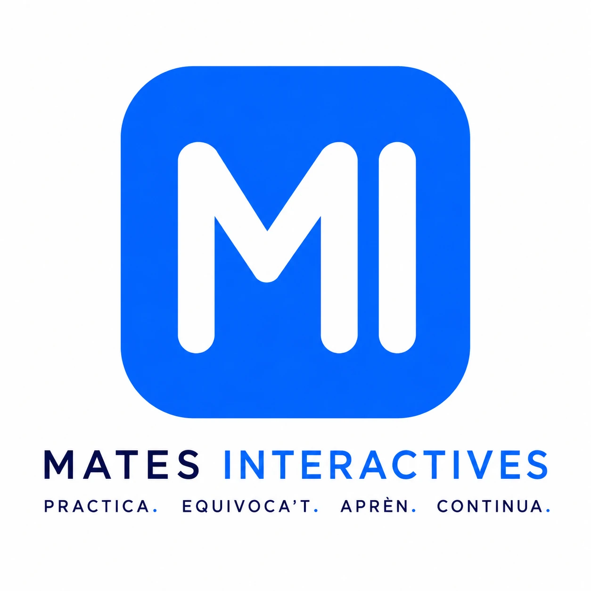

⚡ Correcció immediata
Comprova cada resposta a l'instant, detecta els errors i continua avançant sense perdre el ritme.

Plataforma educativa gratuïta
Aprèn matemàtiques practicant amb exercicis interactius adaptats al currículum de Catalunya. Corregeix els errors, reforça els conceptes i avança al teu ritme.
Una manera diferent d'aprendre matemàtiques: practicant, equivocant-te i millorant pas a pas.
Comprova cada resposta a l'instant, detecta els errors i continua avançant sense perdre el ritme.
Practicar és la millor manera d'entendre les matemàtiques i consolidar els conceptes de forma natural.
Exercicis organitzats segons el currículum oficial de Catalunya perquè puguis treballar cada tema quan toca.
Funciona des de qualsevol dispositiu, sense instal·lar cap aplicació i completament des del navegador.
Comença pel curs que estàs estudiant. Nous cursos s'aniran incorporant progressivament.
Exercicis interactius, autocorrecció immediata i continguts adaptats al currículum de Catalunya.
ComençaEn desenvolupament. Disponible pròximament.
En desenvolupament. Disponible pròximament.
En desenvolupament. Disponible pròximament.
Mates Interactives neix amb un objectiu molt senzill: ajudar els estudiants a aprendre matemàtiques practicant. Creiem que equivocar-se forma part del procés d'aprenentatge i que cada exercici és una oportunitat per millorar.
La plataforma és completament gratuïta, està adaptada al currículum de Catalunya i evoluciona constantment amb nous recursos, activitats i cursos.
Si Mates Interactives t'ha ajudat, pots contribuir a mantenir aquest projecte viu.
Les donacions es destinen íntegrament a crear nous exercicis, millorar la plataforma i incorporar nous cursos perquè cada vegada sigui més útil per als estudiants.
☕ Convida'm a un cafè